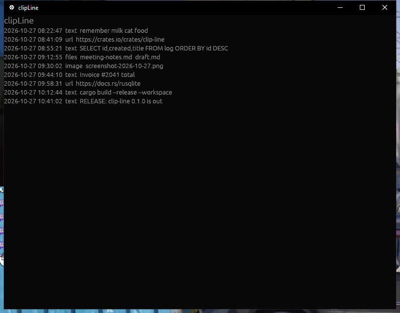

Fast, open-source clipboard history for Windows, Linux and macOS. Rust + SQLite, local first.

Text, URLs, images and copied files land in one searchable history, tagged with the app that made them.
Put a clip back on the clipboard or inject Ctrl+V straight into the window you came from.
One SQLite file in your config dir. No account, no cloud, no telemetry.
Reads and extends an existing ClipDiary history database in place — format documented for anyone to adopt.
git clone https://github.com/katsugtgz/clip-line.git cd clip-line cargo install --path crates/clip-line-app
Or grab a prebuilt binary from the releases page.
cargo run -p clip-line-app --bin clip-line-headless
The original ClipDiary is Windows-only and closed source. clipLine is a clean-room, MIT-licensed rebuild of the same interaction model — history list, search, stars, tags, snippets — that runs on every desktop OS. See docs/interop.md for the database format we keep compatible.